White
The color of purity and innocence. White is a true balance of all colors. It is associated with cleanliness, simplicity, and perfection.
It provides hope and clarity by refreshing and purifying the mind. White also promotes open-mindedness and self-reflection.
1. snow
눈 [noon]
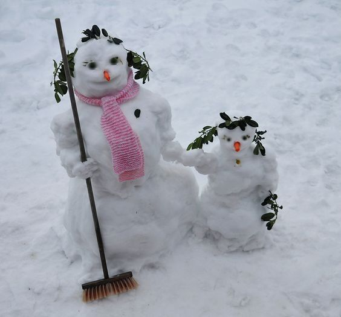
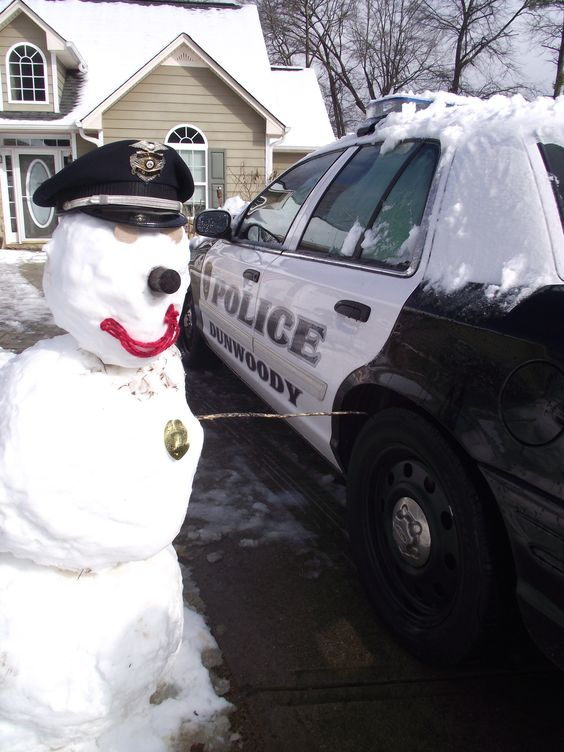
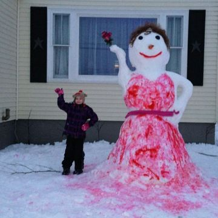
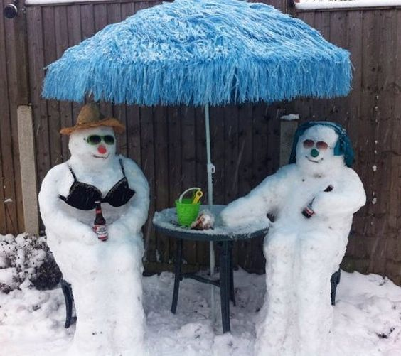
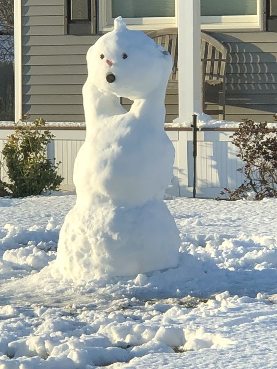
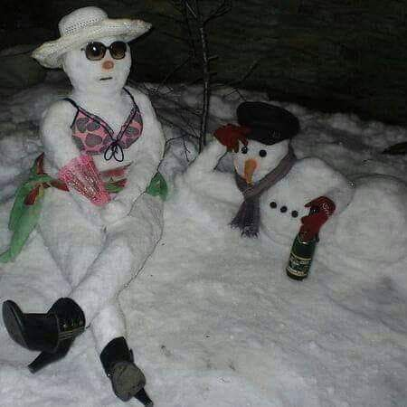
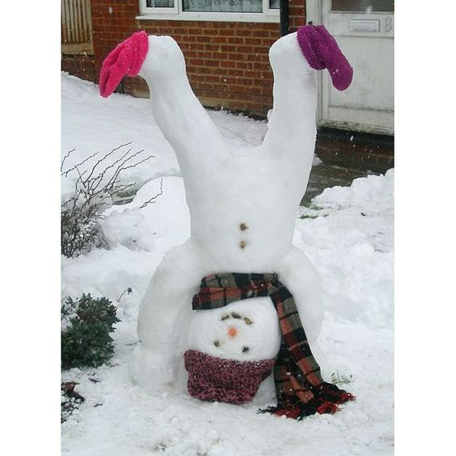
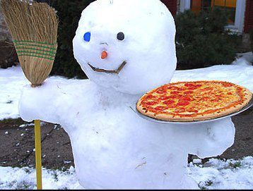
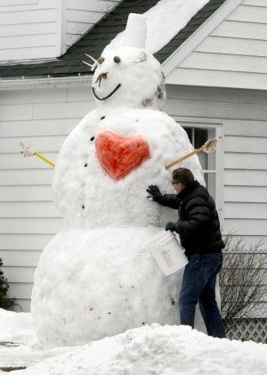
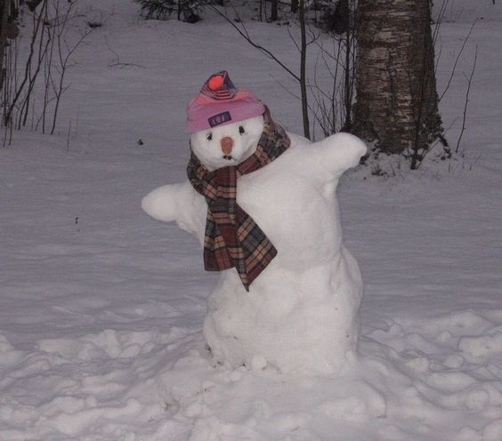
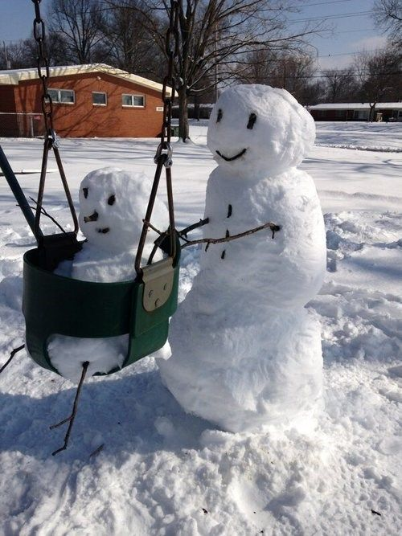
snowman= 눈사람 [noon-sa-ram]
입시할 때 동네친구랑 나보다 키 큰 눈사람 만든 썰 푼다..
2. winter
겨울 [gyeo-wool]
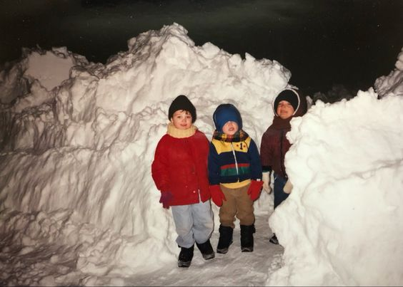
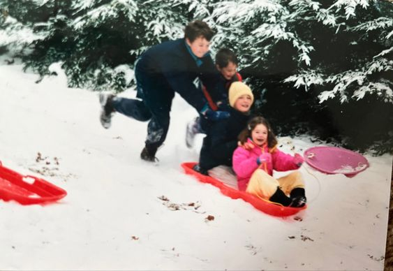
sleigh= 썰매 [sseol-mae]
gloves= 장갑 [jang-gop]
겨울에는 장갑 필수.. 난 스키보다 눈썰매가 더 재밌어~
3. angel
천사 [cheon-sa]
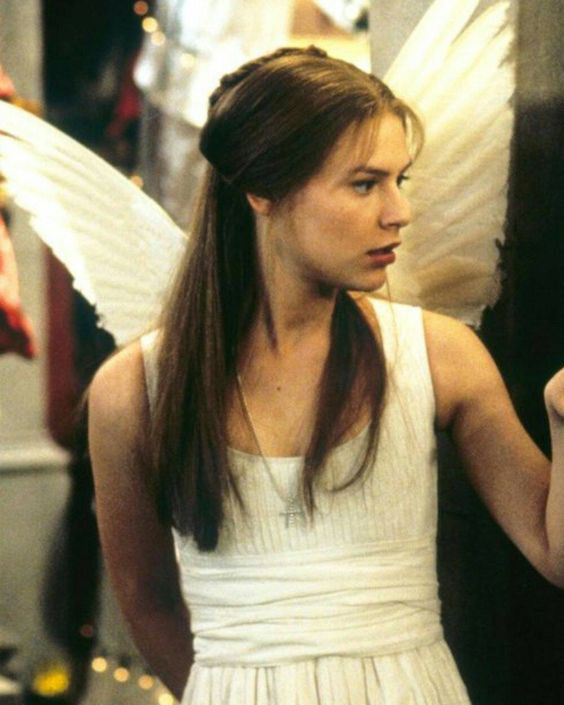
wings 날개 [nal-gae]
줄리엣 선생님 너무 아름다우세요 그냥
4. pillow
베개 [bae-gae]
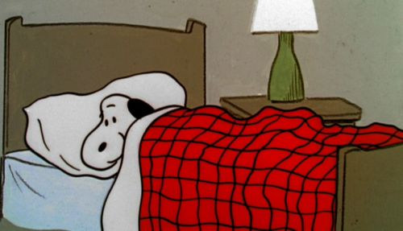
blanket 담요 [dam-yo]
집이 최고여. 이불 밖은 위험해!!
5. innocence
순결함 [soon-gyeol-ham]
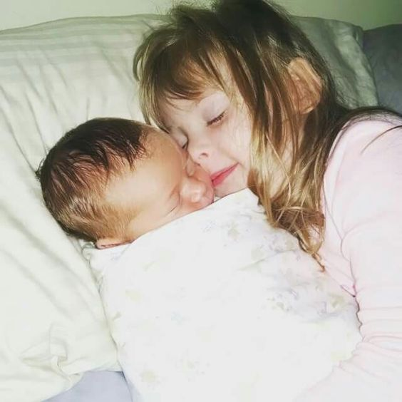
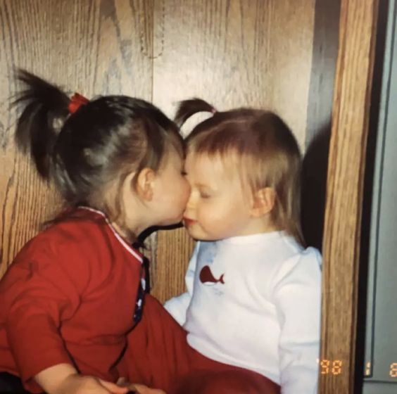
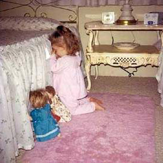
pure 순수한 [soon-soo-han]
몇 년 후 치고밖고 싸울 사이
6. peace
평화 [pyeong-hwa]
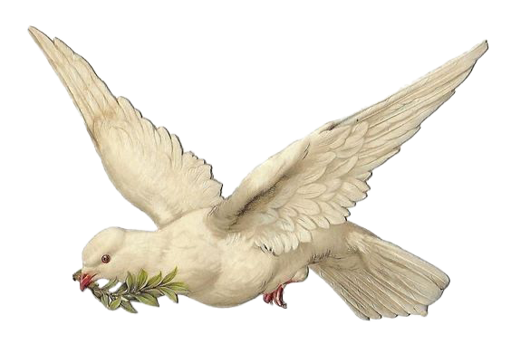
peace 화평 [hwa-pyeong] - this is another way to say peace in Korean
우영우, 토마토, 기러기, 화평-평화 let's go
7. rice
쌀 [ssal]
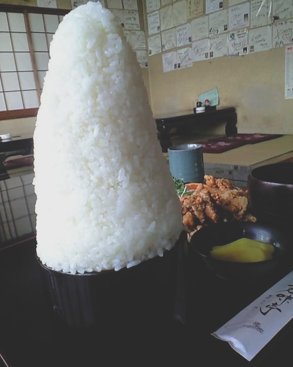
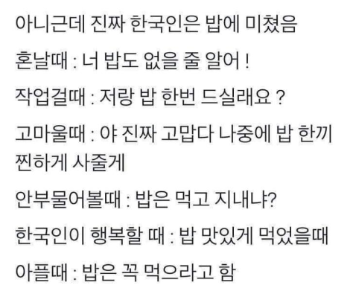
boiled rice 밥 [bob]
한국인은 밥심. 코딩이 아무리 어려워도 밥은 먹고~
8. paper
종이 [jong-yi]
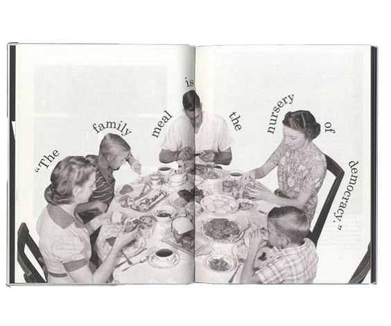
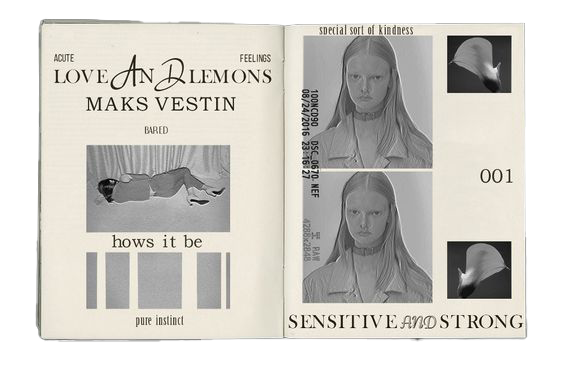
book 책 [chack]
이번 학기 제일 재밌었던 과제는 단연코 책 만들기였습니다.
9. sculpture
조각 [jo-gak]
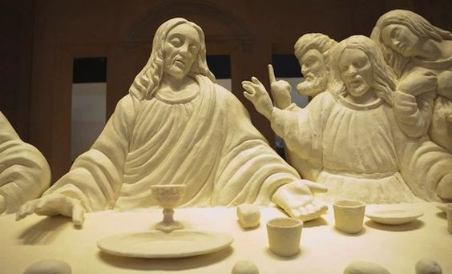
sculptor 조각가 [jo-gak-ga]
조각가분 손에 버터 냄새 한 일주일은 갈 듯
10. toilet
변기 [byeon-gi]
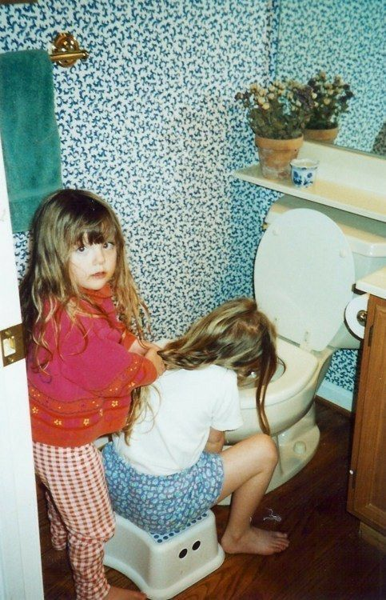
toilet paper 휴지 [hyoo-ji]
혈육 욕은 나만 할 수 있음